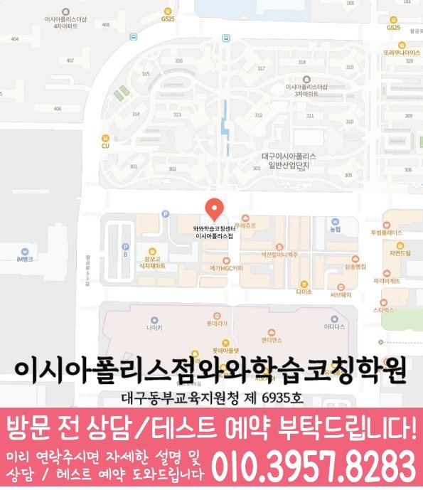

봉무동 초등 영수학원 수업 안내

local academy guide
봉무동 초등 영수에서 학원을 찾는 학생과 학부모를 위해 상담, 진단, 플래너, 오답 관리 기준을 정리했습니다.


LOCAL ACADEMY GUIDE
대구 동구 봉무동에서 초등 영수학원을 찾는 학생을 위해 영어·수학·국어(문해) 실력을 함께 잡는 학습 흐름을 안내합니다. 와와학습코칭센터 이시아폴리스점은 현재 수준을 정확히 진단하고, 개념 정리부터 문제풀이, 오답 관리까지 연결되는 커리큘럼으로 실력이 누적되도록 지도합니다. 반복 학습이 필요한 부분은 탄탄히 잡고, 이해가 된 부분은 유형 확장으로 실전 감각까지 키웁니다.
단원 이해도, 풀이 습관, 오답 원인을 먼저 확인해 봉무동 초등 학생에게 맞는 학습 순서로 진행합니다.
영어는 어휘·문법·독해 흐름을, 수학은 개념·유형·오답을, 국어는 읽기·서술(논리)까지 함께 점검합니다.
학교 진도와 학습 목표에 맞춰 영수 비중을 유동적으로 조절하고, 시험 직전에는 실수 유형을 집중 보완합니다.
학생이 어디에서 막히는지 확인하고, 핵심 개념을 연결해 스스로 풀 수 있는 구조를 만들어 줍니다.
틀린 문제를 단순 반복하지 않고 이유(개념/계산/독해/문장 해석/실수)를 분류해 재발을 막습니다.
숙제·복습·오답 정리 습관을 점검해 수업 시간이 끝난 뒤에도 꾸준히 성장하도록 관리합니다.
학년, 학교 진도, 최근 학습 결과를 바탕으로 부족한 단원과 자주 틀리는 유형을 정리합니다.
대표 개념을 탄탄히 잡고, 기본→응용→서술/서술형으로 단계적으로 확장해 실력을 안정화합니다.
오답을 “왜 틀렸는지” 기준으로 분류해 다음 수업에서 바로 보완하고, 풀이 과정까지 점검합니다.
대구 동구 봉무동 와와학습코칭센터 이시아폴리스점은 학생의 현재 상태를 기준으로 영어·수학·국어(문해) 학습을 정리하고, 상담을 통해 초등 영수학원으로서 필요한 방향을 자세히 안내드립니다.
COACHING CHECK
최근 성적, 학교 진도, 과목별 약점과 공부 습관을 함께 확인합니다.
계획표 작성에서 끝나지 않고 실제 실행 여부와 미완료 원인을 점검합니다.
틀린 문제의 원인을 분류하고 유사 문제로 다시 확인해 반복 실수를 줄입니다.
대구 동구 팔공로51길 33 A-503호 와와학습코칭학원
~ 와와학습코칭센터 이시아폴리스점 위치는 (대구 동구 팔공로51길 33 A-503호 와와학습코칭학원)입니다. 이시아폴리스 더샵3차아파트 맞은편 이스트 애플빌딩 5층
| 횟수 | 초등 | 중등 | 고등 |
|---|---|---|---|
| 주 3회 | 249,000 | 266,000 | 299,000 |
| 주 4회 | 319,000 | 341,000 | 384,000 |
| 주 5회 | 389,000 | 416,000 | 469,000 |
| 횟수 | 초등 | 중등 | 고등 |
|---|---|---|---|
| 주 3회 | 219,000 | 236,000 | 269,000 |
| 주 4회 | 279,000 | 301,000 | 344,000 |
| 주 5회 | 339,000 | 366,000 | 419,000 |
* 수업료는 지역 및 횟수에 따라 일부 차이가 있을 수 있습니다.
PARENT FAQ
봉무동 초등 영수학원 상담 전 자주 확인하시는 내용을 정리했습니다.
어휘, 문법 개념, 문장 해석, 본문 복습, 서술형 영작 중 어디에서 막히는지 확인한 뒤 필요한 루틴을 잡아갑니다.
학생의 학년, 학교 진도, 최근 시험 결과, 과목별 어려움, 숙제와 복습 습관을 먼저 확인한 뒤 필요한 관리 방향을 정리합니다.
학교 시험 범위와 일정에 맞춰 복습 순서, 오답 재풀이, 서술형 대비, 암기 확인을 평소보다 더 촘촘하게 조정합니다.
학생의 수업 진행, 플래너 실행 상태, 반복 오답, 다음 관리 포인트를 중심으로 학습 상황을 이해하기 쉽게 확인할 수 있습니다.
가능합니다. 이전 학년 개념 결손이나 현재 단원 이해도를 먼저 확인한 뒤 선행보다 보충이 필요한 부분을 우선 관리할 수 있습니다.
PARENT REVIEWS
실제 상담과 학습관리에서 자주 언급되는 만족 포인트를 정리했습니다. 평균 평점 4.8점 기준입니다.
시험기간에 무엇부터 복습해야 할지 정리해 주셔서 준비 과정이 한결 안정됐습니다.
학부모 후기플래너를 통해 해야 할 공부가 분명해지니 집에서도 미루는 시간이 줄었습니다.
학부모 후기단순히 문제만 많이 푸는 것이 아니라 풀이 과정과 습관을 함께 봐줘서 만족합니다.
학부모 후기상담 때 아이의 현재 상태를 구체적으로 설명해 주셔서 관리 방향을 이해하기 쉬웠습니다.
학부모 후기아이가 어려워하는 단원을 다시 짚고 넘어가니 학교 수업 이해도도 좋아졌습니다.
학부모 후기아이의 공부 습관을 먼저 살펴보고 필요한 부분부터 차근차근 잡아주셔서 안심이 됩니다.
학부모 후기LOCAL DETAIL LINKS
같은 동네 안에서 함께 보면 좋은 학원 안내 페이지를 모았습니다. 필요한 과정으로 바로 이동해 보세요.